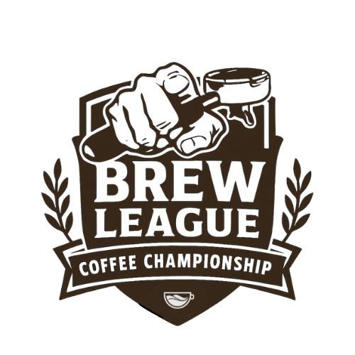

<!doctype html>
<html lang="en">
<head>
  <meta charset="utf-8" />
  <meta name="viewport" content="width=device-width, initial-scale=1.0" />
  <title>Brew League Score Sheet</title>
  <meta name="description" content="Audit checklist for training at Third Wave Coffee." />
  <meta name="theme-color" content="#f8fafc" />
  <link rel="icon" href="/favicon.ico" />
  <meta property="og:title" content="Brew League Score Sheet" />
  <meta property="og:description" content="Audit checklist for training at Third Wave Coffee." />
  <meta property="og:type" content="website" />
  <script src="https://cdn.tailwindcss.com"></script>
  <script src="https://unpkg.com/react@18/umd/react.development.js" crossorigin></script>
  <script src="https://unpkg.com/react-dom@18/umd/react-dom.development.js" crossorigin></script>
  <script src="https://unpkg.com/@babel/standalone/babel.min.js"></script>
  <script src="https://cdnjs.cloudflare.com/ajax/libs/jspdf/2.5.1/jspdf.umd.min.js"></script>
  <script src="https://cdnjs.cloudflare.com/ajax/libs/jspdf-autotable/3.5.25/jspdf.plugin.autotable.min.js"></script>
  <script src="https://cdnjs.cloudflare.com/ajax/libs/exif-js/2.3.0/exif.min.js"></script>
  <style>
  /* header center title */
  .topbar{max-width:1200px;margin:0 auto;border-radius:12px;padding-left:16px;padding-right:16px;min-height:64px;display:flex;align-items:center;box-sizing:border-box}
  .hamburger{background:transparent;border:none;padding:8px;border-radius:8px;cursor:pointer}
  .menu-panel{position:absolute;right:12px;top:56px;background:white;border-radius:10px;box-shadow:0 10px 30px rgba(2,6,23,0.12);z-index:10000;padding:8px;min-width:160px}
  .menu-item{display:block;width:100%;text-align:left;padding:10px;border-radius:8px;border:none;background:transparent;cursor:pointer}
  .menu-item:hover{background:#f1f5f9}
  @media (max-width: 720px){
  /* header mobile adjustments */
      .topbar{padding-left:12px;padding-right:12px;top:8px}
      body{padding-top:96px}
      /* stack header content vertically on small screens */
  .topbar{display:flex;flex-direction:column;align-items:flex-start;gap:8px;min-height:auto}
      .controls{width:100%;display:flex;justify-content:flex-end;gap:8px;flex-wrap:wrap}
      .select{min-width:140px}
      .hamburger{padding:10px;font-size:18px}
      .menu-panel{position:fixed;right:12px;top:60px}
    }
  /* mobile title handled via header flow if needed */
  /* Collapsible helpers */
  .collapsible{overflow:hidden;transition:max-height .28s ease;padding-top:0;padding-bottom:0}
  .collapsible.expanded{padding-top:12px;padding-bottom:12px;max-height:1200px}
  .collapsible.collapsed{max-height:0}
    .fade-in { opacity: 0; animation: fadeIn 0.6s forwards; }
    @keyframes fadeIn { to { opacity: 1; } }
    /* Material You inspired pastel backgrounds and elevation */
    .report-box {
      border-radius: 1.5rem;
      background: #f5f7fa;
      border: 2px solid #e3e8f2;
      box-shadow: 0 4px 16px #e3e8f299;
      transition: box-shadow 0.2s;
    }
    .report-box:focus-within, .report-box:hover {
      box-shadow: 0 8px 24px #c7d2fe99;
      border-color: #c7d2fe;
    }
    .section-title {
      font-size: 1.2rem;
      font-weight: 700;
      text-align: center;
      margin: 0;
      padding: 12px 0 10px 0;
      color: #2563eb;
      letter-spacing: 0.01em;
    }
    .autotable-header {
      color: #23272f !important;
      background: #e3e8f2 !important;
      font-weight: bold !important;
      font-size: 11px !important;
      text-align: center !important;
    }
    /* One UI 7 inspired layout tokens */
    :root{
      --oneui-surface: #f8fafc;
      --oneui-elev: rgba(34,38,43,0.06);
      --accent: #2563eb;
      --muted: #6b7280;
      --radius-lg: 14px;
      --radius-md: 10px;
      --glass: linear-gradient(180deg, rgba(255,255,255,0.8), rgba(246,248,250,0.8));
  font-family: 'Lato', Inter, ui-sans-serif, system-ui, -apple-system, "Segoe UI", Roboto, "Helvetica Neue", Arial;
    }
  .app-shell{max-width:1200px;margin:6px auto;padding:16px}
  /* ensure overlay appears above header and other controls */
  .sections-overlay{z-index:11000}
  /* layout alignment fixes */
  .layout-grid{align-items:start;grid-auto-rows:min-content}
  .sidebar{padding:0}
  main{min-width:0}
  .report-box{margin-bottom:18px}
  .report-box.p-4{padding:20px}
  /* make form inputs consistently sized and box-friendly */
  input,textarea,select{box-sizing:border-box}
  .report-box input,.report-box textarea{height:46px}
  .report-box label{display:block;margin-bottom:6px}
  /* section header alignment */
  .report-box h3{margin:0 0 8px 0}
  /* ensure sections pill doesn't overlap the details card */
  .sections-pill{left:6px}
  @media(min-width:900px){.sections-pill{left:20px}}
  .topbar{display:flex;align-items:center;gap:6px;padding:4px 12px;border-radius:var(--radius-lg);background:var(--glass);box-shadow:0 6px 18px var(--oneui-elev);border:1px solid rgba(34,38,43,0.04);position:relative}
  /* header will scroll away with page; keep a very small top margin so content doesn't touch it */
  .topbar{margin:2px auto;max-width:1200px;min-height:44px}
    body{padding-top:6px}
    .brand{display:flex;align-items:center;gap:6px}
    .brand .logo{height:40px;width:40px;border-radius:10px;background:linear-gradient(135deg,var(--accent),#7c3aed);box-shadow:0 4px 14px rgba(37,99,235,0.18);display:flex;align-items:center;justify-content:center;color:white;font-weight:700;overflow:hidden}
  .brand-img{height:56px;width:auto;border-radius:8px;object-fit:contain}
  .title{font-size:1.25rem;font-weight:700;color:#0f172a;text-transform:capitalize}
  .brand{display:flex;align-items:center;gap:12px}
  .brand .brand-title{font-weight:800;color:#0f172a;letter-spacing:0.6px}
    .sub{font-size:12px;color:var(--muted)}
    .controls{margin-left:auto;display:flex;gap:12px;align-items:center}
    .select{background:white;border:1px solid rgba(34,38,43,0.06);padding:8px 10px;border-radius:10px;box-shadow:0 2px 8px rgba(16,24,40,0.03);min-width:180px}
    .btn{background:var(--accent);color:white;padding:8px 12px;border-radius:10px;border:none;cursor:pointer;box-shadow:0 6px 12px rgba(37,99,235,0.12)}
    @media (max-width:720px){.controls{flex-direction:column;align-items:flex-end}.select{min-width:140px}}
  /* Checklist-specific styles */
  .report-box{padding:16px}
  /* align section boxes with details card by ensuring consistent left/right inset */
  main section.report-box{margin-left:0;margin-right:0}
    table th, table td{vertical-align:middle}
    .chip{display:inline-flex;align-items:center;justify-content:center;padding:6px 10px;border-radius:999px;font-weight:700;font-size:11px}
  /* Micro-interactions for chips */
  .chip{position:relative;overflow:hidden;transition:transform .12s cubic-bezier(.2,.9,.2,1),box-shadow .12s,background .18s,color .12s}
  .chip:active{transform:scale(.96)}
  .chip::after{content:'';position:absolute;left:50%;top:50%;width:0;height:0;background:rgba(255,255,255,0.22);border-radius:50%;transform:translate(-50%,-50%);transition:width .32s ease,height .32s ease,opacity .24s}
  .chip:active::after{width:200%;height:200%;opacity:1}
  /* selected (tailwind ring applied) - give a subtle lift */
  .chip.ring-2{box-shadow:0 8px 20px rgba(37,99,235,0.12);transform:translateY(-3px) scale(1.02)}
  .chip.yes{background:linear-gradient(90deg,#d1fae5,#bbf7d0);color:#065f46}
  .chip.no{background:linear-gradient(90deg,#fee2e2,#fecaca);color:#7f1d1d}
  .chip.na{background:linear-gradient(90deg,#fff7ed,#ffedd5);color:#713f12}
  /* Strong selected state for accessibility */
  .chip.yes.selected{background:linear-gradient(90deg,#10b981,#059669);color:white;box-shadow:0 10px 30px rgba(16,185,129,0.28);transform:translateY(-2px) scale(1.03);}
  .chip.no.selected{background:linear-gradient(90deg,#ef4444,#dc2626);color:white;box-shadow:0 10px 30px rgba(239,68,68,0.28);transform:translateY(-2px) scale(1.03);}
  .chip.na.selected{background:linear-gradient(90deg,#f59e0b,#d97706);color:white;box-shadow:0 10px 30px rgba(245,158,11,0.28);transform:translateY(-2px) scale(1.03);}
  /* glow on click - generic and color-specific (brighter & more saturated) */
  .chip.clicked{animation:chipGlowBase .9s ease-out;filter:saturate(1.18) brightness(1.06);transform:translateY(-2px) scale(1.03)}
  @keyframes chipGlowBase{0%{box-shadow:0 0 0 rgba(37,99,235,0);filter:saturate(1) brightness(1)}30%{box-shadow:0 12px 36px rgba(37,99,235,0.22);filter:saturate(1.22) brightness(1.08)}100%{box-shadow:0 8px 24px rgba(37,99,235,0.12);filter:saturate(1.12) brightness(1.04)}}
  .chip.yes.clicked{animation:chipGlowGreen .9s ease-out;filter:saturate(1.3) brightness(1.08)}
  @keyframes chipGlowGreen{0%{box-shadow:0 0 0 rgba(16,185,129,0);filter:saturate(1) brightness(1)}30%{box-shadow:0 12px 36px rgba(16,185,129,0.28);filter:saturate(1.36) brightness(1.12)}100%{box-shadow:0 8px 24px rgba(16,185,129,0.14);filter:saturate(1.2) brightness(1.06)}}
  .chip.no.clicked{animation:chipGlowRed .9s ease-out;filter:saturate(1.28) brightness(1.06)}
  @keyframes chipGlowRed{0%{box-shadow:0 0 0 rgba(239,68,68,0);filter:saturate(1) brightness(1)}30%{box-shadow:0 12px 36px rgba(239,68,68,0.28);filter:saturate(1.34) brightness(1.12)}100%{box-shadow:0 8px 24px rgba(239,68,68,0.14);filter:saturate(1.18) brightness(1.06)}}
  .chip.na.clicked{animation:chipGlowYellow .9s ease-out;filter:saturate(1.24) brightness(1.06)}
  @keyframes chipGlowYellow{0%{box-shadow:0 0 0 rgba(245,158,11,0);filter:saturate(1) brightness(1)}30%{box-shadow:0 12px 36px rgba(245,158,11,0.28);filter:saturate(1.3) brightness(1.12)}100%{box-shadow:0 8px 24px rgba(245,158,11,0.14);filter:saturate(1.16) brightness(1.06)}}
  /* persistent glow when selected */
  .chip.ring-2.yes{box-shadow:0 14px 40px rgba(16,185,129,0.28), 0 6px 18px rgba(16,185,129,0.10);filter:saturate(1.18) brightness(1.06);transform:translateY(-2px)}
  .chip.ring-2.no{box-shadow:0 14px 40px rgba(239,68,68,0.28), 0 6px 18px rgba(239,68,68,0.10);filter:saturate(1.18) brightness(1.06);transform:translateY(-2px)}
  .chip.ring-2.na{box-shadow:0 14px 40px rgba(245,158,11,0.28), 0 6px 18px rgba(245,158,11,0.10);filter:saturate(1.12) brightness(1.06);transform:translateY(-2px)}
    .section-title{font-size:1rem;margin-bottom:6px}
    form { width: 100%; }
    @media(min-width:1024px){
      form.max-w-2xl{max-width:1100px}
    }
  /* responsive layout tweaks */
    @media (max-width: 900px){
      .layout-grid{grid-template-columns:1fr !important}
      .sidebar{position:relative;top:auto}
      .controls{flex-wrap:wrap;gap:8px}
      .select{min-width:120px}
    }
    /* Align sections pill with centered content on wide screens */
    @media (min-width:1200px){
      .sections-pill{left:calc((100% - 1200px)/2 + 12px)}
    }

  /* Report box micro-interactions and entrance animation */
  .report-box{transition:transform .22s cubic-bezier(.2,.9,.2,1),box-shadow .22s,opacity .3,background .18s;will-change:transform,opacity}
  .report-box:hover{transform:translateY(-6px);box-shadow:0 18px 40px rgba(2,6,23,0.06)}
  /* initial state for sections: subtle rise and fade-in */
  [id$="-section"]{opacity:0;transform:translateY(8px);transition:transform .45s cubic-bezier(.2,.9,.2,1),opacity .45s}
  [id$="-section"].in-view{opacity:1;transform:translateY(0)}

  /* Sidebar button hover */
  .sidebar button{transition:transform .12s,box-shadow .12s}
  .sidebar button:hover{transform:translateX(4px)}
    /* Left-side sections pill (collapsed state) - smaller and tighter */
    .sections-pill{position:fixed;left:8px;top:50%;transform:translateY(-50%);background:var(--accent);color:white;padding:6px 8px;font-size:13px;border-radius:999px;cursor:pointer;box-shadow:0 6px 18px rgba(2,6,23,0.10);z-index:9999;display:flex;align-items:center;gap:8px;min-height:36px}
    .sections-pill .label{font-weight:700;white-space:nowrap;max-width:90px;overflow:hidden;text-overflow:ellipsis}
    .sections-pill .chev{opacity:0.95;font-size:12px}
    @media (max-width:720px){
      .sections-pill{left:12px;bottom:18px;top:auto;transform:none;padding:8px 10px;font-size:14px}
    }
  /* Overlay card when pill is opened - frosted glass, overlaps content without reflowing layout */
  .sections-overlay{position:fixed;left:50%;top:50%;transform:translate(-50%,-50%);width:min(92%,420px);max-height:82vh;overflow:auto;border-radius:14px;padding:12px;z-index:10050;backdrop-filter:blur(10px) saturate(120%);-webkit-backdrop-filter:blur(10px) saturate(120%);background:rgba(255,255,255,0.64);border:1px solid rgba(255,255,255,0.36);box-shadow:0 20px 50px rgba(2,6,23,0.12)}
  /* balloon pop animation */
  .sections-overlay{position:fixed;left:50%;top:50%;transform:translate(-50%,-50%);width:min(92%,420px);max-height:82vh;overflow:auto;border-radius:14px;padding:12px;z-index:10050;backdrop-filter:blur(10px) saturate(120%);-webkit-backdrop-filter:blur(10px) saturate(120%);background:rgba(255,255,255,0.64);border:1px solid rgba(255,255,255,0.36);box-shadow:0 20px 50px rgba(2,6,23,0.12);transform-origin:center center}
  .sections-overlay.pop-enter{animation:popIn .36s cubic-bezier(.2,.9,.2,1) forwards}
  .sections-overlay.pop-exit{animation:popOut .28s cubic-bezier(.3,.9,.2,1) forwards}
  @keyframes popIn{0%{opacity:0;transform:scale(.2) translate(-50%,-50%)}60%{transform:scale(1.06) translate(-50%,-50%)}100%{opacity:1;transform:scale(1) translate(-50%,-50%)}}
  @keyframes popOut{0%{opacity:1;transform:scale(1) translate(-50%,-50%)}100%{opacity:0;transform:scale(.24) translate(-50%,-50%)}}
  .sections-overlay .report-box{background:transparent;border:none;box-shadow:none;padding:6px}
  .sections-overlay .collapse-btn{position:absolute;right:10px;top:8px}

  /* Sidebar nav button alignment: make label and count align evenly */
  .sidebar nav button{display:flex;align-items:center;justify-content:space-between;padding:8px 10px;border-radius:10px}
  .sidebar nav button .font-semibold{line-height:1.05}
  .sidebar nav button .text-xs{opacity:0.8}

  /* Tighten report-box form spacing so inputs align in a compact grid */
  .report-box.p-4{padding:12px}
  .report-box input, .report-box select, .report-box textarea{height:44px}
    /* sidebar close control */
    .sidebar .collapse-btn{position:absolute;right:10px;top:10px;background:transparent;border:none;padding:6px;border-radius:8px;cursor:pointer}
  /* Fix overflow for long questions (sensory sheet) in flex rows
    - allow the question column to shrink and wrap instead of forcing the row to grow
    - allow the control area (chips / buttons / uploads) to wrap to the next line on narrow screens
    - keep chip buttons from stretching the question column
  */
  .report-box .flex-1 { min-width: 0; white-space: normal; overflow-wrap: anywhere; word-break: break-word; }
  .report-box .p-3.bg-white.rounded-lg.flex.items-center.gap-3 { flex-wrap: wrap; }
  .report-box .chip { flex-shrink: 0; margin-top: 6px; }
  /* Ensure the question/control row fully uses available width and positions controls to the right
     without forcing horizontal scrolling. Make the chips wrap and shrink on small screens. */
  /* Use CSS grid for the question + controls row so the question reliably takes remaining
     space (1fr) and the controls size to content (auto). This prevents controls from
     forcing the question to overflow. On very small screens the controls will stack below. */
  .report-box .p-3.bg-white.rounded-lg.flex.items-center.gap-3 {
    display: grid;
    grid-template-columns: 1fr auto;
    align-items: center;
    gap: 12px;
    width: 100%;
    box-sizing: border-box;
  }
  .report-box .p-3.bg-white.rounded-lg.flex.items-center.gap-3 > .flex-1 { min-width: 0; }
  .report-box .p-3.bg-white.rounded-lg.flex.items-center.gap-3 > .flex { display:flex; gap:8px; flex-wrap:wrap; align-items:center; justify-self:end; }
  .report-box .p-3.bg-white.rounded-lg.flex.items-center.gap-3 > input[type="file"],
  .report-box .p-3.bg-white.rounded-lg.flex.items-center.gap-3 > button { justify-self: end; }
  /* ensure the row doesn't exceed its parent and lets text wrap cleanly */
  .report-box .p-3.bg-white.rounded-lg.flex.items-center.gap-3 { max-width: 100%; overflow-wrap: anywhere; word-break: break-word; }
  .report-box .p-3.bg-white.rounded-lg.flex.items-center.gap-3 > .flex-1 { overflow: visible; }
  /* allow chips to shrink slightly instead of forcing the row wider */
  .chip { flex: 0 1 auto; }
  /* hide tiny accidental horizontal overflow on the app shell to remove the scrollbar */
  .app-shell, main { overflow-x: hidden; }
  /* Smaller chips on very small screens to save horizontal space */
  @media (max-width: 420px) {
    .chip { padding: 6px 8px; font-size: 12px; }
    .report-box .p-3.bg-white.rounded-lg.flex.items-center.gap-3 > .flex { gap:6px; }
    .report-box .p-3.bg-white.rounded-lg.flex.items-center.gap-3 { gap:10px; }
  }
  /* Stack controls under the question on narrow screens to avoid any horizontal overflow */
  @media (max-width: 520px) {
    .report-box .p-3.bg-white.rounded-lg.flex.items-center.gap-3 { grid-template-columns: 1fr; }
    .report-box .p-3.bg-white.rounded-lg.flex.items-center.gap-3 > .flex { justify-self: start; }
    .report-box .p-3.bg-white.rounded-lg.flex.items-center.gap-3 > input[type="file"],
    .report-box .p-3.bg-white.rounded-lg.flex.items-center.gap-3 > button { justify-self: start; }
  }

  /* Sensory-specific: match the technical sheet layout by giving the control column
     a fixed max width so long question text wraps and controls cannot expand the row.
     This mirrors the technical sheet behavior and prevents overflow on medium widths. */
  #SensoryScore-section .p-3.bg-white.rounded-lg.flex.items-center.gap-3 {
    grid-template-columns: 1fr 170px; /* question + control column */
    align-items: center;
  }
  /* Slightly reduce chip size in the sensory section to keep alignment tidy */
  #SensoryScore-section .chip { padding: 8px 10px; }
  @media (max-width: 640px) {
    #SensoryScore-section .p-3.bg-white.rounded-lg.flex.items-center.gap-3 { grid-template-columns: 1fr 140px; }
    #SensoryScore-section .chip { padding: 6px 8px; font-size: 13px; }
  }
  </style>
  <link href="https://fonts.googleapis.com/css2?family=Inter:wght@400;600;700;800&display=swap" rel="stylesheet">
  <link href="https://fonts.googleapis.com/css2?family=Lato:wght@400;700;900&display=swap" rel="stylesheet">
</head>
<body class="bg-gray-100">
  <div id="root" style="display:none"></div>
  <script type="text/babel">
    const { useState, useEffect } = React;
    // Robust URL parameter extraction
    function getParam(name) {
      const params = new URLSearchParams(window.location.search);
      const val = params.get(name);
      return val ? decodeURIComponent(val.replace(/\+/g, ' ')) : '';
    }
    const judgeName = getParam('judgeName') || getParam('name') || '';
    const judgeId   = getParam('judgeId') || getParam('id') || '';
    // Primary logging endpoints (frontend will POST to all configured endpoints)
    // Note: keep the original endpoint first to preserve existing behavior
    const LOG_ENDPOINTS = [
      'https://script.google.com/macros/s/AKfycbxyQNTJFO5aZqrIkHfvrLpTylF474frOFq1C6oU0qoyBX2DVNjps-ovVUCEIa9xJj_UTA/exec'
    ];
    const safeVibrate = pattern => { if(navigator?.vibrate) navigator.vibrate(pattern); };
  const safeLS = { get:k=>{try{return localStorage.getItem(k)}catch{return null}}, set:(k,v)=>{try{localStorage.setItem(k,v)}catch{}}, clear:()=>{try{localStorage.clear()}catch{}} };
    // Checklist Data & Scoring (UPDATED)
    const SECTIONS = [
      // Grooming & Hygiene
      {
        id: 'GroomingHygiene',
        title: 'Grooming & Hygiene',
        items: [
          { id: 'SanitizedHands', q: 'Has the barista sanitized their hands  (Using Soap)', w: 1 },
          { id: 'ApronClean', q: 'Is the barista apron free from stains and damage', w: 1 },
          { id: 'NameTag', q: 'Is the barista wearing a name tag', w: 1 },
          { id: 'FormalPants', q: 'Is the barista wearing black formal pants', w: 1 },
          { id: 'BlackShoes', q: 'Is the barista wearing black shoes', w: 1 },
          { id: 'GroomingStandards', q: 'Barista following the grooming standards (Beard/Hair/Make-up) Male and female', w: 2 },
          { id: 'NailsTrimmed', q: 'Is the baristas nails trimmed', w: 1 },
          { id: 'JewelryPermitted', q: 'Only permitted jewelry worn', w: 1 }
        ]
      },
      // Espresso (Dial-In)
      {
        id: 'EspressoDialIn',
        title: 'Espresso (Dial-In)',
        items: [
          { id: 'Shot0', q: 'Shot extracted to check the recipe', w: 0 },
          { id: 'DialInStartTime', q: 'Dial-In Start time:', w: 0 }
        ]
      },
      // Espresso (Dial-In) Shot 1
      {
        id: 'EspressoDialInShot1',
        title: 'Espresso (Dial-In) Shot 1',
        items: [
          { id: 'GrindChange', q: 'Is the barista able to change the grind size based on under/over extracted shot', w: 5 },
          { id: 'ExplainDialIn', q: 'Is the barista able to explain the dial-in process', w: 3 },
          { id: 'WasteDose', q: 'Did the barista waste a dose after changing the grind size every time', w: 3 },
          { id: 'CheckWeight', q: 'Did the barista check the weight of the ground coffee after changing the grind size', w: 2 },
          { id: 'GrindingTime', q: 'Is the barista able to set the grinding time to dispense the right amount for dose', w: 2 },
          { id: 'GrinderCleaned', q: 'Area around the grinder cleaned with brush to clear out grounds', w: 2 },
          { id: 'PortaFilterDry', q: 'Porta filter wiped with dry grey cloth', w: 2 },
          { id: 'BasketFreeGrounds', q: 'Porta filter basket free from brewed coffee gounds', w: 2 },
          { id: 'RightBasket', q: 'Right basket porta filter used for intended shot', w: 2 },
          { id: 'RightGrammage', q: 'Right grammage of ground coffee taken', w: 2 },
          { id: 'CoffeeLevelled', q: 'Coffee grounds levelled using tap/chop method before tamping', w: 3 },
          { id: 'TampingMachine', q: 'Tamping machine set as per standard', w: 2 },
          { id: 'PortaFilterRim', q: 'Porta filter rim wiped to clear loose coffee grounds before inserting into group head', w: 2 },
          { id: 'FlushGrouphead', q: 'Barista Flushes the grouphead befor insert', w: 3 },
          { id: 'DripTrayWiped', q: 'Drip tray wiped with the right green cloth after flushing', w: 2 },
          { id: 'PortaFilterSmooth', q: 'Porta filter inserted into group head smoothly without knocking', w: 3 },
          { id: 'ExtractionButton', q: 'Right extraction button pressed within 3 seconds of inserting the porta filter', w: 3 },
          { id: 'FlowEvenly', q: 'Did the espresso flow evenly from both the spouts', w: 3 },
          { id: 'ShotBrewTime', q: 'Was the shot extracted within the brew time', w: 5 },
          { id: 'ShotYield', q: 'Was the shot extracted within the  yield  (+/- 1 g )', w: 5 }
        ]
      },
      // Espresso (Dial-In) Shot 2
      {
        id: 'EspressoDialInShot2',
        title: 'Espresso (Dial-In) Shot -2',
        items: [
          { id: 'GrindChange', q: 'Is the barista able to change the grind size based on under/over extracted shot', w: 5 },
          { id: 'ExplainDialIn', q: 'Is the barista able to explain the dial-in process', w: 3 },
          { id: 'WasteDose', q: 'Did the barista waste a dose after changing the grind size every time', w: 3 },
          { id: 'CheckWeight', q: 'Did the barista check the weight of the ground coffee after changing the grind size', w: 2 },
          { id: 'GrindingTime', q: 'Is the barista able to set the grinding time to dispense the right amount for dose', w: 2 },
          { id: 'GrinderCleaned', q: 'Area around the grinder cleaned with brush to clear out grounds', w: 2 },
          { id: 'PortaFilterDry', q: 'Porta filter wiped with dry grey cloth', w: 2 },
          { id: 'BasketFreeGrounds', q: 'Porta filter basket free from brewed coffee gounds', w: 2 },
          { id: 'RightBasket', q: 'Right basket porta filter used for intended shot', w: 2 },
          { id: 'RightGrammage', q: 'Right grammage of ground coffee taken', w: 2 },
          { id: 'CoffeeLevelled', q: 'Coffee grounds levelled using tap/chop method before tamping', w: 3 },
          { id: 'TampingMachine', q: 'Tamping machine set as per standard', w: 2 },
          { id: 'PortaFilterRim', q: 'Porta filter rim wiped to clear loose coffee grounds before inserting into group head', w: 2 },
          { id: 'FlushGrouphead', q: 'Barista Flushes the grouphead befor insert', w: 3 },
          { id: 'DripTrayWiped', q: 'Drip tray wiped with the right green cloth after flushing', w: 2 },
          { id: 'PortaFilterSmooth', q: 'Porta filter inserted into group head smoothly without knocking', w: 3 },
          { id: 'ExtractionButton', q: 'Right extraction button pressed within 3 seconds of inserting the porta filter', w: 3 },
          { id: 'FlowEvenly', q: 'Did the espresso flow evenly from both the spouts', w: 3 },
          { id: 'ShotBrewTime', q: 'Was the shot extracted within the brew time', w: 5 },
          { id: 'ShotYield', q: 'Was the shot extracted within the  yield  (+/- 1 g )', w: 5 }
        ]
      },
      {
        id: 'DialInEndTime',
        title: '',
        items: [
          { id: 'DialInEndTime', q: 'Dial-In End time:', w: 0 }
        ]
      },
      // Milk Based Beverages
      {
        id: 'MilkBasedBeverages',
        title: 'Milk Based Beverages',
        items: [
          { id: 'BeverageName', q: 'Mention the name of the beverage that is asked to be prepared.', w: 0 },
          { id: 'StartTime', q: 'Start time:', w: 0 }
        ]
      },
      // Milk Based Beverages Cup-1
      {
        id: 'MilkCup1',
        title: 'Milk Based Beverages  Cup-1',
        items: [
          { id: 'Cup1PreWarmed', q: 'Is the cup pre-warmed before extraction', w: 2 }
        ]
      },
      // Cup-1 Steaming
      {
        id: 'Cup1Steaming',
        title: 'Cup-1 Steaming',
        items: [
          { id: 'CleanPitcher', q: 'Is the Barista uses a clean milk pitcher for every order', w: 2 },
          { id: 'RightPitcher', q: 'Is the barista using the right milk pitcher for the intended beverage size', w: 3 },
          { id: 'ColdMilk', q: 'In the barista using cold milk  stored in the chiller', w: 3 },
          { id: 'MilkPouch', q: 'Is the milk pouch stored in the 900ml pitcher', w: 1 },
          { id: 'RightMilkAmount', q: 'Is the barista taking the right amount of milk for the intended beverage size', w: 3 },
          { id: 'FoamConsistency', q: 'Is the barista able to create the right consistency of foam for a latte/ Cappuccino/Flat white', w: 3 },
          { id: 'SteamingWiped', q: 'Steaming wand is  wiped & purged after use', w: 3 },
          { id: 'GreenClothSteam', q: 'Did the barista use the right green cloth to wipe the steam wand', w: 3 },
          { id: 'GreenClothStored', q: 'Did the barista store the green cloth in the GN pan after use', w: 2 }
        ]
      },
      // Cup-1 Pouring
      {
        id: 'Cup1Pouring',
        title: 'Cup-1 pouring',
        items: [
          { id: 'TapPitcher', q: 'Does the barista tap the pitcher to remove excess bubbles (if any)', w: 1 },
          { id: 'SwirlPitcher', q: 'Did the barista swirl the pitcher to ensure the milk and foam is well mixed', w: 1 },
          { id: 'LatteArt', q: 'Barista able to create latte art in the cup (Cappuccino- Heart , Latte- Tulip/ Rosetta , Flat white - Single dotin the centre )', w: 5 },
          { id: 'LatteArtCenter', q: 'Is the latte art in the centre of the cup', w: 3 },
          { id: 'ContrastCrema', q: 'is there a visible contrast between the crema and the latte art', w: 3 },
          { id: 'LatteArtFacing', q: 'Is the latte art facing the customer with the handle on the right side', w: 3 },
          { id: 'IdenticalArt', q: 'Did the 2 beverages presented have identical latte art', w: 5 },
          { id: 'NoSpillage', q: 'No spillage of espresso or milk on the outer part of the cup', w: 2 },
          { id: 'MilkWastage', q: 'Milk wastage less than 50ml', w: 3 },
          { id: 'CleanPitcherAfter', q: 'Did the barista clean the milk pitcher after use', w: 1 }
        ]
      },
      // Cup-2
      {
        id: 'MilkCup2',
        title: 'Cup-2',
        items: [
          { id: 'Cup2PreWarmed', q: 'Is the cup pre-warmed before extraction', w: 2 }
        ]
      },
      // Cup-2 Steaming
      {
        id: 'Cup2Steaming',
        title: 'Cup-2 Steaming',
        items: [
          { id: 'SteamingExplain', q: 'Is the barista able to explain the milk steaming process', w: 2 },
          { id: 'CleanPitcher', q: 'Is the Barista uses a clean milk pitcher for every order', w: 2 },
          { id: 'RightPitcher', q: 'Is the barista using the right milk pitcher for the intended beverage size', w: 3 },
          { id: 'ColdMilk', q: 'In the barista using cold milk  stored in the chiller', w: 3 },
          { id: 'MilkPouch', q: 'Is the milk pouch stored in the 900ml pitcher', w: 1 },
          { id: 'RightMilkAmount', q: 'Is the barista taking the right amount of milk for the intended beverage size', w: 3 },
          { id: 'FoamConsistency', q: 'Is the barista able to create the right consistency of foam for a latte/ Cappuccino/Flat white', w: 3 },
          { id: 'SteamingWiped', q: 'Steaming wand is  wiped & purged after use', w: 3 },
          { id: 'GreenClothSteam', q: 'Did the barista use the right green cloth to wipe the steam wand', w: 2 },
          { id: 'GreenClothStored', q: 'Did the barista store the green cloth in the GN pan after use', w: 1 }
        ]
      },
      // Cup-2 Pouring
      {
        id: 'Cup2Pouring',
        title: 'Cup-2 Pouring',
        items: [
          { id: 'TapPitcher', q: 'Does the barista tap the pitcher to remove excess bubbles (if any)', w: 1 },
          { id: 'SwirlPitcher', q: 'Did the barista swirl the pitcher to ensure the milk and foam is well mixed', w: 1 },
          { id: 'LatteArt', q: 'Barista able to create latte art in the cup (Cappuccino- Heart , Latte- Tulip/ Rosetta , Flat white - Single dot in the centre)', w: 5 },
          { id: 'LatteArtCenter', q: 'Is the latte art in the centre of the cup', w: 3 },
          { id: 'ContrastCrema', q: 'is there a visible contrast between the crema and the latte art', w: 3 },
          { id: 'LatteArtFacing', q: 'Is the latte art facing the customer with the handle on the right side', w: 3 },
          { id: 'NoSpillage', q: 'No spillage of espresso or milk on the outer part of the cup', w: 2 },
          { id: 'MilkWastage', q: 'Milk wastage less than 50ml', w: 3 },
          { id: 'CleanPitcherAfter', q: 'Did the barista clean the milk pitcher after use', w: 1 }
        ]
      },
      // Cup-3
      {
        id: 'MilkCup3',
        title: 'Cup-3',
        items: [
          { id: 'Cup3PreWarmed', q: 'Is the cup pre-warmed before extraction', w: 2 }
        ]
      },
      // Cup-3 Steaming
      {
        id: 'Cup3Steaming',
        title: 'Cup-3 Steaming',
        items: [
          { id: 'SteamingExplain', q: 'Is the barista able to explain the milk steaming process', w: 2 },
          { id: 'CleanPitcher', q: 'Is the Barista uses a clean milk pitcher for every order', w: 2 },
          { id: 'RightPitcher', q: 'Is the barista using the right milk pitcher for the intended beverage size', w: 3 },
          { id: 'ColdMilk', q: 'In the barista using cold milk  stored in the chiller', w: 3 },
          { id: 'MilkPouch', q: 'Is the milk pouch stored in the 900ml pitcher', w: 1 },
          { id: 'RightMilkAmount', q: 'Is the barista taking the right amount of milk for the intended beverage size', w: 3 },
          { id: 'FoamConsistency', q: 'Is the barista able to create the right consistency of foam for a latte/ Cappuccino/Flat white', w: 3 },
          { id: 'SteamingWiped', q: 'Steaming wand is  wiped & purged after use', w: 3 },
          { id: 'GreenClothSteam', q: 'Did the barista use the right green cloth to wipe the steam wand', w: 2 },
          { id: 'GreenClothStored', q: 'Did the barista store the green cloth in the GN pan after use', w: 1 }
        ]
      },
      // Cup-3 Pouring
      {
        id: 'Cup3Pouring',
        title: 'Cup-3 Pouring',
        items: [
          { id: 'TapPitcher', q: 'Does the barista tap the pitcher to remove excess bubbles (if any)', w: 1 },
          { id: 'SwirlPitcher', q: 'Did the barista swirl the pitcher to ensure the milk and foam is well mixed', w: 1 },
          { id: 'LatteArt', q: 'Barista able to create latte art in the cup (Cappuccino- Heart , Latte- Tulip/ Rosetta , Flat white - Single dot in the centre)', w: 5 },
          { id: 'LatteArtCenter', q: 'Is the latte art in the centre of the cup', w: 3 },
          { id: 'ContrastCrema', q: 'is there a visible contrast between the crema and the latte art', w: 3 },
          { id: 'LatteArtFacing', q: 'Is the latte art facing the customer with the handle on the right side', w: 3 },
          { id: 'NoSpillage', q: 'No spillage of espresso or milk on the outer part of the cup', w: 2 },
          { id: 'MilkWastage', q: 'Milk wastage less than 50ml', w: 3 },
          { id: 'CleanPitcherAfter', q: 'Did the barista clean the milk pitcher after use', w: 1 }
        ]
      },
      // End time and final questions
      {
        id: 'EndTime',
        title: 'Overall',
        items: [
          { id: 'EndTime', q: 'End time:', w: 0 },
          { id: 'MilkWastage100', q: 'Milk wastage less than 150ml', w: 3 },
          { id: 'CounterClean', q: 'Did the barista clean the counter before completing his/ Her routine', w: 5 },
          { id: 'CouponsRedeemed', q: "The coupons are redeemed from the participant's app", w: 0 }
        ]
      }
    ];

    // Sensory-only simplified sections (from user-provided sensory sheet)
    const SENSORY_SECTIONS = [
      {
        id: 'SensoryScore',
        title: 'Sensory sheet',
        items: [
          { id: 'BeverageName', q: 'Mention the name of the beverage that is asked to be prepared.', w: 0 },
          { id: 'LatteArtStd', q: 'Was the Latte art created as per TWC std (Cappuccino- Heart , Latte- Tulip/ Rosetta , Flat white - Single dot )', w: 5 },
          { id: 'ShinyGlossy', q: 'Was it shiny and glossy?', w: 3 },
          { id: 'NoBubbles', q: 'No visible bubbles on the surface', w: 3 },
          { id: 'ArtCentre', q: 'Is the latte art in the centre of the cup', w: 3 },
          { id: 'ContrastCrema', q: 'Is there a visible contrast between the crema and the latte art', w: 3 },
          { id: 'ArtFacing', q: 'Is the latte art facing the customer with the handle on the right side', w: 5 },
          { id: 'Cover70', q: 'Did the latte art cover 70% of the cup surface', w: 3 },
          { id: 'FrothLevel', q: 'Was the froth level present as per TWC standard (Three Swipes- cappuccino, Two Swipes- Latte & One swipe- Flatwhite)', w: 4 },
          { id: 'CupImage', q: 'Cup 1 &  2- Image (Both Together)', w: 0 },
          { id: 'Smile', q: 'Did the barista smile and have an engaging interaction with the judge', w: 3 },
          { id: 'CounterClean', q: 'Did the barista leave the counter clean after finishing his/her performance', w: 3 }
        ]
      }
    ];
    const optionColors = { yes:'green', no:'red', na:'yellow' };
    const options = Object.entries(optionColors);
    const colorMap = {
      yes: {
        selected: "bg-green-200 ring-2 ring-green-500 hover:bg-green-300",
        base: "bg-green-100 hover:bg-green-300"
      },
      no: {
        selected: "bg-red-200 ring-2 ring-red-500 hover:bg-red-300",
        base: "bg-red-100 hover:bg-red-300"
      },
      na: {
        selected: "bg-yellow-200 ring-2 ring-yellow-500 hover:bg-yellow-300",
        base: "bg-yellow-100 hover:bg-yellow-300"
      }
    };
    function App(){
      const [resp,setResp]=useState(()=>JSON.parse(safeLS.get('resp')||'{}'));
      const [participantName, setParticipantName] = useState(safeLS.get('participantName') || '');
      const [participantEmpID, setParticipantEmpID] = useState(safeLS.get('participantEmpID') || '');
      const [storeName, setStoreName] = useState(safeLS.get('storeName') || '');
  const [storeID, setStoreID] = useState(safeLS.get('storeID') || '');
  // sheetEndpoint removed from frontend per request
  // coffeeMachineName removed per request
      const [imgs,setImgs]=useState(()=>JSON.parse(safeLS.get('imgs')||'{}'));
      const [remarks, setRemarks] = useState(() => JSON.parse(safeLS.get('remarks') || '{}')); // REMARKS
      const [downloading,setDownloading]=useState(false);
      const [downloaded, setDownloaded] = useState(false);
      const [showPopup, setShowPopup] = useState(false);
      // New top-level UI state
  const [scoresheetType, setScoresheetType] = useState(safeLS.get('scoresheetType') || 'technical');
  // default landing is Manual Machine Technical
  const [machineType, setMachineType] = useState(safeLS.get('machineType') || 'manual');
  // top-right menu state
  const [menuOpen, setMenuOpen] = useState(false);
  const [activeTab, setActiveTab] = useState('Score Sheet');
  const [activeSection, setActiveSection] = useState(SECTIONS[0].id);
  // Collapsible UI state
  const [sidebarOpen, setSidebarOpen] = useState(true);
  // overlay state for pill -> opens frosted glass card that overlaps content (does not reflow layout)
  const [overlayOpen, setOverlayOpen] = useState(false);
  const [detailsOpen, setDetailsOpen] = useState(true);

      // Helper to pick the active sections list based on selections
      const getActiveSections = () => {
        if (scoresheetType === 'sensory') return SENSORY_SECTIONS;
        // technical
        if (machineType === 'automatic') {
          // for automatic, use grooming and milk sections from SECTIONS
          const ids = ['GroomingHygiene','MilkBasedBeverages','MilkCup1','Cup1Steaming','Cup1Pouring','MilkCup2','Cup2Steaming','Cup2Pouring','MilkCup3','Cup3Steaming','Cup3Pouring','EndTime'];
          return SECTIONS.filter(s => ids.includes(s.id));
        }
        // manual technical: include espresso dial-in and milk sections
        const idsManual = ['GroomingHygiene','EspressoDialIn','EspressoDialInShot1','EspressoDialInShot2','DialInEndTime','MilkBasedBeverages','MilkCup1','Cup1Steaming','Cup1Pouring','MilkCup2','Cup2Steaming','Cup2Pouring','MilkCup3','Cup3Steaming','Cup3Pouring','EndTime'];
        return SECTIONS.filter(s => idsManual.includes(s.id));
      };
  useEffect(()=>{
    safeLS.set('resp',JSON.stringify(resp));
    safeLS.set('participantName',participantName);
    safeLS.set('participantEmpID',participantEmpID);
    safeLS.set('storeName',storeName);
    safeLS.set('storeID',storeID);
  // coffeeMachineName persistence removed
    safeLS.set('imgs',JSON.stringify(imgs));
    safeLS.set('remarks', JSON.stringify(remarks)); // REMARKS
  },[resp,participantName,participantEmpID,storeName,storeID,imgs,remarks]); // REMARKS

  // persist sheet/machine selection
  useEffect(()=>{ safeLS.set('scoresheetType', scoresheetType); },[scoresheetType]);
  useEffect(()=>{ safeLS.set('machineType', machineType); },[machineType]);
      const handleOption=(sec,it,val)=>{
        const key=`${sec.id}_${it.id}`;
        setResp(p=>({...p,[key]:val}));
        if(navigator?.vibrate){
          if(val==='yes')safeVibrate(50);
          else if(val==='no')safeVibrate([50,50]);
        }
      };
      const handleTSA=(sec,it,val)=>{
        const key=`${sec.id}_${it.id}`;
        setResp(p=>({...p,[key]:val}));
        if(navigator?.vibrate) safeVibrate(50);
      };
      const addImages=(sec,e)=>{
        Array.from(e.target.files).forEach(f=>{
          EXIF.getData(f,function(){
            const r=new FileReader();
            r.onload=ev=>setImgs(p=>({...p,[sec.id]:[...(p[sec.id]||[]),ev.target.result]}));
            r.readAsDataURL(f);
          });
        });
        e.target.value=null;
      };
      const handleCaptureTime = (sec, it) => {
        const key = `${sec.id}_${it.id}`;
        const currentTime = new Date().toLocaleTimeString('en-GB', { hour12: false });
        setResp((prev) => ({ ...prev, [key]: currentTime }));
      };
      // Wire up header controls after mount
  // remove old DOM wiring; header is now React-controlled
      // Track incomplete fields for UI feedback
      const [incompleteFields, setIncompleteFields] = useState([]);
      const checkCompletion = () => {
        let missing = [];
        if (!participantName.trim()) missing.push({ type: 'field', id: 'participantName', label: 'Participant Name' });
        if (!participantEmpID.trim()) missing.push({ type: 'field', id: 'participantEmpID', label: 'Participant Emp. ID' });
        if (!storeName.trim()) missing.push({ type: 'field', id: 'storeName', label: 'Store Name' });
        if (!storeID.trim()) missing.push({ type: 'field', id: 'storeID', label: 'Store ID' });
  // coffeeMachineName validation removed
        // Make at least one Grooming & Hygiene image mandatory if the active sections include it
        const activeSecs = getActiveSections();
        if (activeSecs.find(s=>s.id==='GroomingHygiene') && !(imgs['GroomingHygiene'] && imgs['GroomingHygiene'].length > 0)) {
          missing.push({ type: 'img', secId: 'GroomingHygiene', itId: 'GroomingHygieneImage', secTitle: 'Grooming & Hygiene', question: 'At least one Grooming & Hygiene image required' });
        }
  // No Cup image required per technical sheet
        activeSecs.forEach(sec => {
          sec.items.forEach(it => {
            const key = `${sec.id}_${it.id}`;
            // Skip image checks for grooming images (handled separately)
            if (sec.id === 'GroomingHygiene' && it.id === 'GroomingHygieneImage') {
              return;
            }
            // Skip requiring a resp for SensoryScore CupImage - it's handled via image uploads
            if (sec.id === 'SensoryScore' && it.id === 'CupImage') {
              // optionally enforce images here by uncommenting the block below
              // if (!(imgs['SensoryScore'] && imgs['SensoryScore'].length > 0)) {
              //   missing.push({ type: 'img', secId: 'SensoryScore', itId: 'CupImage', secTitle: sec.title, question: it.q });
              // }
              return;
            }
            if (resp[key] == null) {
              missing.push({ type: 'resp', secId: sec.id, itId: it.id, secTitle: sec.title, question: it.q });
            }
          });
        });
        return missing;
      };
      const allDone = checkCompletion().length === 0;
      // SUBMIT & PDF
      const handleSubmit=async e=>{
        e.preventDefault();
        const missing = checkCompletion();
        setIncompleteFields(missing);
        if(missing.length > 0){
          safeVibrate([200,200]);
          // Optionally scroll to first missing field
          if (missing[0]) {
            let el = null;
            if (missing[0].type === 'field') {
              el = document.getElementById(missing[0].id);
            } else if (missing[0].type === 'resp' || missing[0].type === 'img') {
              el = document.getElementById(`${missing[0].secId}-section`);
            }
            if (el) el.scrollIntoView({ behavior: 'smooth', block: 'center' });
          }
          return;
        }
        setIncompleteFields([]);
        setDownloading(true);
        // Score calculation
        let total=0, max=0, sectionScores={}, sectionMax={};
        // For time fields
        const getTime = (secId, itemId) => {
          const sec = getActiveSections().find(s => s.id === secId);
          if (!sec) return '';
          const it = sec.items.find(i => i.id === itemId);
          if (!it) return '';
          return resp[`${secId}_${itemId}`] || '';
        };
        // Calculate scores over active sections
        const scoringSections = getActiveSections();
        scoringSections.forEach(sec=>{
          let secTotal=0, secMax=0;
          sec.items.forEach(it=>{
            const key=`${sec.id}_${it.id}`,r=resp[key];
            // Special-case: Sensory cup image is awarded based on image presence, not yes/no/na
            if (sec.id === 'SensoryScore' && it.id === 'CupImage') {
              const hasImgs = imgs['SensoryScore'] && imgs['SensoryScore'].length > 0;
              if (hasImgs) secTotal += it.w;
              // Count the item in max regardless so denominator includes it
              secMax += Math.abs(it.w);
            } else if(sec.id==='TSA'){
              const v=parseInt(r)||0; secTotal+=v; secMax+=it.w;
            } else {
              if(r==='yes')secTotal+=it.w;
              else if(r==='no' && it.wneg)secTotal+=it.wneg;
              if(r!=='na')secMax+=Math.abs(it.w);
            }
          });
          sectionScores[sec.id]=secTotal;
          sectionMax[sec.id]=secMax;
          total+=secTotal;max+=secMax;
        });
        const pct = max?Math.round((total/max)*100):0;
        const completion=new Date().toLocaleString('en-GB',{hour12:false});
        // Get times for top summary
        const dialInStart = getTime('EspressoDialIn', 'DialInStartTime');
        const dialInEnd = getTime('DialInEndTime', 'DialInEndTime');
        const milkStart = getTime('MilkBasedBeverages', 'StartTime');
        const milkEnd = getTime('EndTime', 'EndTime');
        // Helper to get time diff in mm:ss
        function getTimeDiff(start, end) {
          if (!start || !end) return '-';
          const [sh, sm, ss] = start.split(':').map(Number);
          const [eh, em, es] = end.split(':').map(Number);
          if ([sh, sm, ss, eh, em, es].some(isNaN)) return '-';
          let startSec = sh * 3600 + sm * 60 + ss;
          let endSec = eh * 3600 + em * 60 + es;
          let diff = endSec - startSec;
          if (diff < 0) diff += 24 * 3600; // handle midnight wrap
          const min = Math.floor(diff / 60);
          const sec = diff % 60;
          return `${min}m ${sec}s`;
        }
        const dialInTimeTaken = getTimeDiff(dialInStart, dialInEnd);
        const milkTimeTaken = getTimeDiff(milkStart, milkEnd);

        // Logging
        const data = new URLSearchParams({
          participantName,
              participantEmpID,
              judgeName,
              judgeId,
              scoresheetType,
              machineType,
              storeName,
              storeID,
              // coffeeMachineName removed
              totalScore: total,
              maxScore: max,
              percent: pct,
              // Static section scores
              GroomingHygieneScore: sectionScores.GroomingHygiene,
              EspressoDialInScore: sectionScores.EspressoDialIn,
              EspressoDialInShot1Score: sectionScores.EspressoDialInShot1,
              EspressoDialInShot2Score: sectionScores.EspressoDialInShot2,
              DialInEndTimeScore: sectionScores.DialInEndTime,
              MilkBasedBeveragesScore: sectionScores.MilkBasedBeverages,
              MilkCup1Score: sectionScores.MilkCup1,
              Cup1SteamingScore: sectionScores.Cup1Steaming,
              Cup1PouringScore: sectionScores.Cup1Pouring,
              MilkCup2Score: sectionScores.MilkCup2,
              Cup2SteamingScore: sectionScores.Cup2Steaming,
              Cup2PouringScore: sectionScores.Cup2Pouring,
      MilkCup3Score: sectionScores.MilkCup3,
      Cup3SteamingScore: sectionScores.Cup3Steaming,
      Cup3PouringScore: sectionScores.Cup3Pouring,
              EndTimeScore: sectionScores.EndTime,
              dialInTimeTaken,
              milkTimeTaken,
              submissionTime: completion
        });
        try {
          // Send the same payload to all configured endpoints. Failures are ignored to avoid blocking PDF generation.
          await Promise.all(LOG_ENDPOINTS.map(url => fetch(url, { method: "POST", body: data })));
        } catch {}
  // NOTE: Frontend webhook removed per request — configured LOG_ENDPOINTS will receive the submission (they include scoresheetType & machineType)
        safeVibrate(100);
        
        // PDF Generation
        const {jsPDF}=window.jspdf;
        const doc=new jsPDF({orientation:'portrait',unit:'mm'});
        // HEADER
        doc.setFontSize(20);
        doc.setFont('helvetica','bold');
        doc.setTextColor("#263140");
        doc.text("Brew League Score Sheet", 105, 15, { align: "center" });
        // Participant and Judge Details
        doc.setFontSize(12);
        doc.setFont('helvetica','normal');
        doc.setTextColor("#24272e");
    doc.text(`Participant Name: ${participantName}`, 10, 25);
    doc.text(`Participant Emp. ID: ${participantEmpID}`, 10, 30);
    doc.text(`Judge Name: ${judgeName}`, 10, 35);
    doc.text(`Judge ID: ${judgeId}`, 10, 40);
    doc.text(`Scoresheet Type: ${scoresheetType}`, 10, 45);
    doc.text(`Machine Type: ${machineType}`, 10, 50);
    doc.text(`Date/Time: ${completion}`, 10, 56);
  // Machine Name removed from PDF header
    doc.text(`Store Name: ${storeName}`, 10, 66);
    doc.text(`Store ID: ${storeID}`, 10, 71);
        // Dial-In and Milk-Based Times
let y = 67;
doc.setFont('helvetica','bold');
doc.setFontSize(14);
doc.setTextColor('#1a237e');
doc.text(`Time taken for espresso: ${dialInTimeTaken}`, 105, y, {align: 'center'});
y += 8;
doc.text(`Time taken for milk based: ${milkTimeTaken}`, 105, y, {align: 'center'});
y += 8;
        // Score and Percentage (bold and prominent)
        doc.setFont('helvetica','bold');
        doc.setFontSize(15);
        doc.setTextColor('#00695c');
        doc.text(`Score: ${total} / ${max}   (${pct}%)`, 105, y, { align: 'center' });
        y += 10;
        // Section Details
        const sectionBg = [
          "#E3F6FC",
          "#FEF6E4",
          "#E4F7EE",
          "#FFF1F6",
          "#F1F2FB",
          "#FFF5DA",
          "#F8F9F9",
          "#F5F6F6",
        ];
        for (let s = 0; s < scoringSections.length; s++) {
          const sec = scoringSections[s];
          const bg = sectionBg[s % sectionBg.length];
          // Section title in colored box with divider line above
          doc.setDrawColor('#bdbdbd');
          doc.setLineWidth(0.7);
          doc.line(15, y, 195, y); // divider line
          y += 3;
          doc.setFont("helvetica", "bold");
          doc.setFontSize(13);
          doc.setFillColor(bg);
          doc.roundedRect(13, y, 184, 12, 9, 9, "F");
          doc.setFontSize(12);
          doc.setTextColor("#23272f");
          doc.text(
            `${sec.title}  (Score: ${sectionScores[sec.id]} / ${sectionMax[sec.id]})`,
            105,
            y + 8,
            { align: "center" }
          );
          // Table below title, inside box
          doc.autoTable({
            startY: y + 12,
            head: [["Question", "Response", "Score (Weightage)"]],
            body: sec.items.map((it) => {
              const key = `${sec.id}_${it.id}`;
              const r = resp[key];
              let respText =
                sec.id === "TSA"
                  ? r
                  : r === "yes"
                  ? "Yes"
                  : r === "no"
                  ? "No"
                  : r === "na"
                  ? "NA"
                  : r;
              let score, maxScore;
              if (sec.id === "TSA") {
                score = parseInt(r) || 0;
                maxScore = it.w;
              } else if (r === "yes") {
                score = it.w;
                maxScore = it.w;
              } else if (r === "no" && it.wneg) {
                score = it.wneg;
                maxScore = it.w;
              } else if (r === "na") {
                score = "NA";
                maxScore = it.w;
              } else {
                score = 0;
                maxScore = it.w;
              }
              // Show as score/maxScore, e.g. 1/1, 0/5, NA/3
              let scoreDisplay = (score === "NA") ? `NA/${maxScore}` : `${score}/${maxScore}`;
              return [it.q, respText, scoreDisplay];
            }),
            margin: { left: 18, right: 18 },
            styles: { fontSize: 9, cellPadding: 2, textColor: "#23272f" },
            headStyles: {
              fillColor: "#dbeafe",
              textColor: "#23272f",
              fontStyle: "bold",
            },
            tableLineColor: "#c3dafe",
            tableLineWidth: 0.7,
            theme: "grid",
            showHead: "everyPage",
          });
          let nextY = doc.lastAutoTable.finalY + 4;
          // REMARKS: Insert remarks below table
          if (remarks[sec.id] && remarks[sec.id].trim()) {
            doc.setFont("helvetica", "italic");
            doc.setFontSize(10);
            doc.setTextColor("#444");
            let splitRemarks = doc.splitTextToSize(
              "Remarks: " + remarks[sec.id],
              170
            );
            doc.text(splitRemarks, 18, nextY);
            nextY += splitRemarks.length * 6 + 2;
          }
          y = nextY + 8;
          if (y > 200 && s !== scoringSections.length - 1) {
            doc.addPage();
            y = 20;
          }
        }
        // --- IMAGES AT END ---
        // Grooming & Hygiene Images
        const groomingImgs = imgs['GroomingHygiene'] || [];
        const sensoryImgs = imgs['SensoryScore'] || [];
        if (groomingImgs.length || sensoryImgs.length) {
          doc.addPage();
          let imgY = 20;
          // Grooming Images (left half)
          if (groomingImgs.length) {
            doc.setFont('helvetica','bold');
            doc.setFontSize(13);
            doc.setTextColor('#263140');
            doc.text('Grooming & Hygiene Images', 40, imgY);
            let x = 15, y = imgY + 5;
            let imgW = 35, imgH = 35, gapY = 8;
            groomingImgs.forEach((src, i) => {
              if (i && i % 4 === 0) { y += imgH + gapY; x = 15; }
              doc.addImage(src, 'JPEG', x, y, imgW, imgH);
              x += imgW + 5;
            });
          }
          // Sensory Cup Images (right half)
          if (sensoryImgs.length) {
            doc.setFont('helvetica','bold');
            doc.setFontSize(13);
            doc.setTextColor('#263140');
            doc.text('Sensory Cup Images', 150, imgY);
            let x = 120, y = imgY + 5;
            let imgW = 35, imgH = 35, gapY = 8;
            sensoryImgs.forEach((src, i) => {
              if (i && i % 4 === 0) { y += imgH + gapY; x = 120; }
              doc.addImage(src, 'JPEG', x, y, imgW, imgH);
              x += imgW + 5;
            });
          }
        }
        doc.save(`audit_${participantName}_${Date.now()}.pdf`);
        setDownloading(false);
        setDownloaded(true);
        setShowPopup(true);
        setTimeout(() => {
          setDownloaded(false);
          setShowPopup(false);
        }, 3000);
      };
      const resetAll=()=>{
        safeLS.clear();
        setResp({});
        setParticipantName('');
        setParticipantEmpID('');
        setStoreName('');
        setStoreID('');
  // coffeeMachineName reset removed
        setImgs({});
        setRemarks({}); // REMARKS
        safeVibrate([200,200]);
      };
      // New UI: header inside React, sidebar navigation, and card-based sections
      const visibleSections = getActiveSections();

      // Reset activeSection when selection changes and the previous active is not present
      useEffect(()=>{
        const ids = visibleSections.map(s=>s.id);
        if(!ids.includes(activeSection)) setActiveSection(visibleSections[0]?.id || '');
      },[scoresheetType,machineType]);

      // Initialize collapsible defaults for small screens
      useEffect(()=>{
        try{
          const small = window.innerWidth <= 720;
          // keep details visible on small screens to avoid hiding the second box
          if(small){ setSidebarOpen(false); setDetailsOpen(true); }
          else { setSidebarOpen(true); setDetailsOpen(true); }
          // Ensure checklist (first section) is visible on load
          setTimeout(()=>{
            const first = visibleSections[0]?.id;
            if(first){ setActiveSection(first); const el=document.getElementById(`${first}-section`); if(el) el.scrollIntoView({behavior:'auto', block:'center'}); }
          }, 120);
        }catch(e){}
      },[]);

      // Navigation helper: set active and scroll into view
      const handleNav = (id) => {
        setActiveSection(id);
        setTimeout(()=>{
          const el = document.getElementById(`${id}-section`);
          if(el) el.scrollIntoView({behavior:'smooth', block:'center'});
        }, 50);
      };

      // Close overlay on Escape and clicking outside
      useEffect(()=>{
        if(!overlayOpen) return;
        const onKey = (e)=>{ if(e.key === 'Escape') setOverlayOpen(false); };
        const onClick = (ev)=>{
          // if click occurs outside the overlay content, close it
          const overlay = document.querySelector('.sections-overlay');
          if(overlay && !overlay.contains(ev.target)) setOverlayOpen(false);
        };
        document.addEventListener('keydown', onKey);
        document.addEventListener('pointerdown', onClick);
        return ()=>{ document.removeEventListener('keydown', onKey); document.removeEventListener('pointerdown', onClick); };
      },[overlayOpen]);

      // Balloon pop: compute transform-origin from pill position and toggle animation classes
      useEffect(()=>{
        const overlay = document.getElementById('sections-overlay');
        const pill = document.getElementById('sections-pill');
        if(!overlay || !pill) return;
        const pillRect = pill.getBoundingClientRect();
        const overlayRect = overlay.getBoundingClientRect();
        // compute origin relative to overlay's box (percent)
        const ox = ((pillRect.left + pillRect.width/2) - overlayRect.left) / overlayRect.width * 100;
        const oy = ((pillRect.top + pillRect.height/2) - overlayRect.top) / overlayRect.height * 100;
        overlay.style.transformOrigin = `${ox}% ${oy}%`;
        // add enter class
        overlay.classList.remove('pop-exit');
        overlay.classList.add('pop-enter');
        return ()=>{
          if(overlay){ overlay.classList.remove('pop-enter'); overlay.classList.add('pop-exit'); }
        };
      },[overlayOpen]);

      // IntersectionObserver to animate sections when they enter view
      useEffect(()=>{
        const obs = new IntersectionObserver((entries)=>{
          entries.forEach(e=>{
            if(e.isIntersecting){ e.target.classList.add('in-view'); }
          });
        },{threshold:0.12});
        document.querySelectorAll('[id$="-section"]').forEach(el=>obs.observe(el));
        return ()=>obs.disconnect();
      },[visibleSections]);

      // Chip click helper: add transient class to animate ripple (works with CSS ::after)
      const chipClick = (e) => {
        const el = e.currentTarget;
        el.classList.add('clicked');
        setTimeout(()=>el.classList.remove('clicked'), 350);
      };

      // Ensure scrolling when activeSection changes programmatically
      useEffect(()=>{
        const el = document.getElementById(`${activeSection}-section`);
        if(el) el.scrollIntoView({behavior:'smooth', block:'center'});
      },[activeSection]);

      // Auto-fill for testing: populate fields, images and random responses then submit
      const autoFillAndSubmit = () => {
        // placeholder 1x1 PNG
        const placeholderImg = 'data:image/png;base64,iVBORw0KGgoAAAANSUhEUgAAAAEAAAABCAQAAAC1HAwCAAAAC0lEQVR4nGNgYAAAAAMAASsJTYQAAAAASUVORK5CYII=';
        // fill participant details if empty
        if(!participantName) setParticipantName('Test Participant');
        if(!participantEmpID) setParticipantEmpID('TP-001');
        if(!storeName) setStoreName('Test Store');
        if(!storeID) setStoreID('TS-01');
        // build random responses
        const newResp = {...resp};
        const opts = ['yes','no','na'];
        const secs = getActiveSections();
        secs.forEach(sec => {
          sec.items.forEach(it => {
            const key = `${sec.id}_${it.id}`;
            // time fields -> set current time
            const timeIds = ['DialInStartTime','DialInEndTime','StartTime','EndTime'];
            if(timeIds.includes(it.id)){
              newResp[key] = new Date().toLocaleTimeString('en-GB',{hour12:false});
            } else if(it.id === 'BeverageName'){
              newResp[key] = 'Latte';
            } else if(it.id === 'CupImage' || it.id === 'GroomingHygieneImage' || it.id.toLowerCase().includes('image')){
              // skip – images handled separately
            } else {
              // random yes/no/na
              newResp[key] = opts[Math.floor(Math.random()*opts.length)];
            }
          });
        });
        // images: ensure grooming and endtime have at least one image
        const newImgs = {...imgs};
        const hasG = newImgs['GroomingHygiene'] && newImgs['GroomingHygiene'].length>0;
        if(!hasG) newImgs['GroomingHygiene'] = [placeholderImg];
        // If sensory sheet is active, ensure at least one sensory cup image exists for testing
        const hasS = newImgs['SensoryScore'] && newImgs['SensoryScore'].length>0;
        if(getActiveSections().find(s=>s.id==='SensoryScore') && !hasS) newImgs['SensoryScore'] = [placeholderImg];
        // apply
        setResp(newResp);
        setImgs(newImgs);
        // small delay to let states propagate then submit
        setTimeout(()=>{ handleSubmit({preventDefault:()=>{}}); }, 250);
      };

      return (
        <div className="app-shell">
          {showPopup && (
            <div style={{position:'fixed',top:'16%',right:'16px',zIndex:9999}} className="px-6 py-3 bg-green-600 text-white rounded-lg shadow-lg text-center fade-in">
              Report downloaded!
            </div>
          )}

          <div className="topbar" role="banner" style={{padding:'12px 16px',display:'flex',justifyContent:'space-between',alignItems:'center'}}>
            <div className="brand" style={{display:'flex',alignItems:'center',gap:12}}>
              
              <div className="brand-title">Score sheet | RM level</div>
            </div>
            <div style={{display:'flex',alignItems:'center',gap:8}}>
              {/* header controls intentionally left empty */}
            </div>
          </div>

          <div style={{display:'grid',gridTemplateColumns: sidebarOpen? '260px 1fr' : '1fr',gap:20,marginTop:20}} className="layout-grid">
            <aside style={{position:'sticky',top:84,alignSelf:'start',display: sidebarOpen? 'block' : 'none'}} className="sidebar">
              <div className="report-box p-3">
                <button className="collapse-btn" aria-label="Close sections" onClick={()=>setSidebarOpen(false)} style={{position:'absolute',right:10,top:10}}>✕</button>
                <div className="text-sm font-semibold text-slate-700 mb-2">Sections</div>
                <nav className="flex flex-col gap-2">
                  {visibleSections.map(sec => (
                    <button key={sec.id} onClick={()=>handleNav(sec.id)} className={`text-left p-3 rounded-lg ${activeSection===sec.id?'bg-blue-50 shadow-sm':'hover:bg-slate-50'}`}>
                      <div className="font-semibold text-slate-800">{sec.title}</div>
                      <div className="text-xs text-slate-500">{sec.items.length} items</div>
                    </button>
                  ))}
                </nav>
                <div className="mt-3">
                  <button onClick={resetAll} className="w-full py-2 rounded-lg bg-blue-600 text-white">New Response</button>
                </div>
              </div>
            </aside>

            {/* Small floating Sections pill when sidebar is collapsed on mobile/desktop */}
            {!sidebarOpen && (
              <div className="sections-pill" id="sections-pill" onClick={()=>setOverlayOpen(true)} role="button" aria-label="Open Sections">
                <div className="label">Sections</div>
                <div className="chev">▸</div>
              </div>
            )}

            {/* Overlay frosted card that overlaps content when pill clicked - does not affect grid/layout */}
            {overlayOpen && (
              <div className={`sections-overlay`} role="dialog" aria-modal="true" id="sections-overlay">
                <div className="report-box p-3">
                  <button className="collapse-btn" aria-label="Close sections" onClick={()=>setOverlayOpen(false)} style={{position:'absolute',right:10,top:8}}>✕</button>
                  <div className="text-sm font-semibold text-slate-700 mb-2">Sections</div>
                  <nav className="flex flex-col gap-2">
                    {visibleSections.map(sec => (
                      <button key={sec.id} onClick={()=>{ setOverlayOpen(false); handleNav(sec.id); }} className={`text-left p-3 rounded-lg ${activeSection===sec.id?'bg-blue-50 shadow-sm':'hover:bg-slate-50'}`}>
                        <div className="font-semibold text-slate-800">{sec.title}</div>
                        <div className="text-xs text-slate-500">{sec.items.length} items</div>
                      </button>
                    ))}
                  </nav>
                  <div className="mt-3">
                    <button onClick={()=>{ setOverlayOpen(false); resetAll(); }} className="w-full py-2 rounded-lg bg-blue-600 text-white">New Response</button>
                  </div>
                </div>
              </div>
            )}

            <main>
              <form onSubmit={handleSubmit} className="space-y-6">
                <div className={`report-box p-4 collapsible ${detailsOpen? 'expanded':'collapsed'}`}>
                  <div className="grid grid-cols-1 sm:grid-cols-2 lg:grid-cols-3 gap-3">
                    <div>
                      <label className="text-xs font-semibold text-slate-700">Judge Name</label>
                      <input id="judgeName" readOnly value={judgeName} className="w-full p-3 rounded-lg bg-white border" />
                    </div>
                    <div>
                      <label className="text-xs font-semibold text-slate-700">Judge ID</label>
                      <input id="judgeId" readOnly value={judgeId} className="w-full p-3 rounded-lg bg-white border" />
                    </div>
                    <div>
                      <label className="text-xs font-semibold text-slate-700">Participant Name</label>
                      <input id="participantName" value={participantName} onChange={e=>{setParticipantName(e.target.value);safeLS.set('participantName',e.target.value);}} required className={`w-full p-3 rounded-lg bg-white border ${incompleteFields.some(f=>f.id==='participantName')?'ring-2 ring-red-300':''}`}/>
                    </div>
                    <div>
                      <label className="text-xs font-semibold text-slate-700">Participant Emp. ID</label>
                      <input id="participantEmpID" value={participantEmpID} onChange={e=>{setParticipantEmpID(e.target.value);safeLS.set('participantEmpID',e.target.value);}} required className={`w-full p-3 rounded-lg bg-white border ${incompleteFields.some(f=>f.id==='participantEmpID')?'ring-2 ring-red-300':''}`}/>
                    </div>
                    <div>
                      <label className="text-xs font-semibold text-slate-700">Store Name</label>
                      <input id="storeName" value={storeName} onChange={e=>{setStoreName(e.target.value);safeLS.set('storeName',e.target.value);}} required className={`w-full p-3 rounded-lg bg-white border ${incompleteFields.some(f=>f.id==='storeName')?'ring-2 ring-red-300':''}`}/>
                    </div>
                    <div>
                      <label className="text-xs font-semibold text-slate-700">Store ID</label>
                      <input id="storeID" value={storeID} onChange={e=>{setStoreID(e.target.value);safeLS.set('storeID',e.target.value);}} required className={`w-full p-3 rounded-lg bg-white border ${incompleteFields.some(f=>f.id==='storeID')?'ring-2 ring-red-300':''}`}/>
                    </div>
                    {/* Sheets webhook removed from frontend; server-side LOG_ENDPOINT will receive scoresheetType */}
                    <div>
                      <label className="text-xs font-semibold text-slate-700">Machine Type</label>
                      <div className="flex gap-2 mt-1 items-center">
                        <button type="button" onClick={()=>setMachineType('manual')} className={`chip ${machineType==='manual'?'yes':''}`}>Manual</button>
                        <button type="button" onClick={()=>setMachineType('automatic')} className={`chip ${machineType==='automatic'?'yes':''}`}>Automatic</button>
                      </div>
                      <div className="mt-2">
                        <label className="text-xs font-semibold text-slate-700">Scoresheet</label>
                        <div className="flex gap-2 mt-1">
                          <button type="button" onClick={()=>setScoresheetType('technical')} className={`chip ${scoresheetType==='technical'?'yes':''}`}>Technical</button>
                          <button type="button" onClick={()=>setScoresheetType('sensory')} className={`chip ${scoresheetType==='sensory'?'yes':''}`}>Sensory</button>
                        </div>
                      </div>
                    </div>
                  </div>
                </div>

                {visibleSections.map(sec => (
                  <section key={sec.id} id={`${sec.id}-section`} className={`report-box p-4 ${activeSection===sec.id?'ring-2 ring-blue-100':''}`}>
                    <div className="flex justify-between items-center">
                      <h3 className="text-lg font-bold text-slate-800">{sec.title}</h3>
                      <div className="text-sm text-slate-500">{sec.items.length} items</div>
                    </div>
                    <div className="mt-3 grid gap-3">
                      {sec.items.map(it => {
                        const key = `${sec.id}_${it.id}`;
                        const isTimeField = ['DialInStartTime', 'DialInEndTime', 'StartTime', 'EndTime'].includes(it.id);
                        // ...existing code continues
                        if (it.id === 'BeverageName') {
                          return (
                            <div key={key} className="p-3 bg-white rounded-lg flex items-center gap-3">
                              <div className="flex-1 font-medium">{it.q}</div>
                              <select className="p-2 rounded-lg" value={resp[key]||''} onChange={e=>handleTSA(sec,it,e.target.value)}>
                                <option value="">Select beverage</option>
                                <option value="Cappuccino">Cappuccino</option>
                                <option value="Latte">Latte</option>
                                <option value="Flat white">Flat white</option>
                              </select>
                            </div>
                          );
                        }
                        return (
                          <div key={key} className="p-3 bg-white rounded-lg flex items-center gap-3">
                            <div className="flex-1 font-medium text-slate-800">{it.q}</div>
                            {isTimeField ? (
                              <div>
                                <button type="button" onClick={()=>handleCaptureTime(sec,it)} className="px-4 py-2 rounded-full bg-blue-50">Capture</button>
                                <div className="text-sm text-slate-700 mt-1">{resp[key]||''}</div>
                              </div>
                                ) : (
                                  // If this is the sensory CupImage item, show an image upload instead of yes/no/na
                                  (sec.id === 'SensoryScore' && it.id === 'CupImage') ? (
                                    <div>
                                      <input type="file" accept="image/*" capture="environment" multiple onChange={e=>addImages(sec,e)} className="mt-0" />
                                    </div>
                                  ) : (
                                    <div className="flex gap-2">
                                      {options.map(([opt])=>{
                                        const sel = resp[key]===opt;
                                        return (
                                          <button key={opt} type="button" onClick={(e)=>{ chipClick(e); handleOption(sec,it,opt); }} className={`chip ${opt==='yes'?'yes':opt==='no'?'no':'na'} ${sel? 'selected ring-2 ring-blue-200' : ''}`}>{opt.toUpperCase()}</button>
                                        );
                                      })}
                                    </div>
                                  )
                                )}
                          </div>
                        );
                      })}
                    </div>
                    <div className="mt-3">
                      <label className="text-sm font-semibold text-slate-700">Section Remarks</label>
                      <textarea value={remarks[sec.id]||''} onChange={e=>setRemarks(r=>({...r,[sec.id]:e.target.value}))} className="w-full mt-2 p-3 rounded-lg bg-white border" rows={2} />
                    </div>
                    {sec.id==='GroomingHygiene' && (
                      <div className="mt-3">
                        <label className="text-sm font-semibold text-slate-700">Upload Images</label>
                        <input type="file" accept="image/*" capture="environment" multiple onChange={e=>addImages(sec,e)} className="mt-2" />
                        <div className="flex gap-2 mt-2 overflow-x-auto">{(imgs[sec.id]||[]).map((s,i)=>)}</div>
                      </div>
                    )}
                    {/* Sensory cup image upload is handled inline with the CupImage item; removed duplicate chooser here */}
                  </section>
                ))}

                <div className="flex gap-3">
                  <button type="submit" className={`flex-1 py-3 rounded-lg bg-green-600 text-white font-bold ${downloading?'opacity-70':''}`}>{downloading?'Generating...':'Submit & Download PDF'}</button>
                </div>
              </form>
            </main>
          </div>
        </div>
      );
            }
          </script>

          <script type="text/babel">
            // Show the root only after React has rendered to prevent code flash
            ReactDOM.createRoot(document.getElementById('root')).render(<App/>);
            document.getElementById('root').style.display = '';
          </script>
        </body>
        </html>
